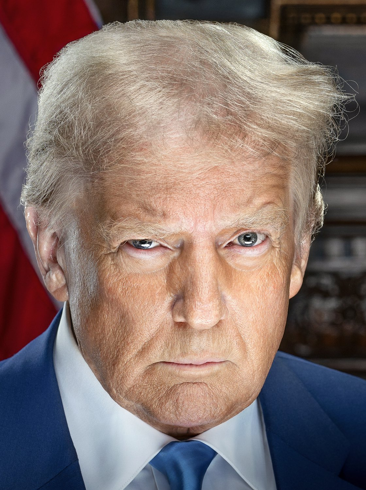

Trump acepta estudiar salvaguardas para la IA, pero rechaza quedar atrás de China
En una entrevista con 60 Minutes, el presidente estadounidense dijo que los riesgos de la inteligencia artificial pueden gestionarse y mostró disposición a negociar medidas de seguridad.

Qué pasó
En una entrevista con el programa 60 Minutes, de CBS, emitida el domingo 8 de noviembre de 2026, el presidente de Estados Unidos, Donald Trump, afirmó que los riesgos de la inteligencia artificial son manejables y se mostró abierto a establecer salvaguardas. Preguntado por la competencia tecnológica con China y la posibilidad de colaborar con los demócratas en normas de seguridad, Trump dijo que no se oponía a las medidas de protección, pero rechazó restricciones que, a su juicio, dejarían a Estados Unidos muy por detrás de China. Reuters informó de sus declaraciones el domingo, mientras que The Guardian y The Wall Street Journal también recogieron su apertura a cierta regulación en reportajes publicados el lunes 9 de noviembre. El mandatario no presentó ningún proyecto de ley, propuesta normativa, calendario ni organismo encargado de un nuevo marco regulatorio. Sus palabras llegan en medio del debate estadounidense sobre los riesgos de la IA avanzada, la inversión en centros de datos y la competitividad internacional.
Análisis del Cuervo
Las declaraciones suponen una apertura discursiva a posibles reglas de seguridad, pero no constituyen un cambio legislativo definido. Equilibrar el desarrollo acelerado y la prevención de daños implica cuestiones de ciberseguridad, privacidad, transparencia y supervisión. Para que las salvaguardas sean efectivas habría que concretar qué riesgos se evalúan, quién fiscaliza su cumplimiento y qué obligaciones asumirían las empresas. Sin una propuesta formal, no se puede determinar el alcance de un eventual cambio de política. Trump presentó la competencia con China como un límite político a cualquier acuerdo.
Contrapunto
El apoyo verbal a las salvaguardas no equivale a la aprobación de una ley ni a la entrada en vigor de restricciones. Trump ha favorecido anteriormente una menor intervención gubernamental y la autorregulación del sector. Los críticos de una regulación excesiva sostienen que normas mal diseñadas pueden favorecer a las grandes empresas y dificultar la innovación; los defensores de una supervisión más estricta advierten que los sistemas avanzados pueden causar daños sin evaluaciones independientes. La afirmación de que China carece de salvaguardas corresponde a Trump y no se ha verificado de manera independiente en esta nota. La fotografía es un retrato oficial de archivo, no una imagen de la entrevista.